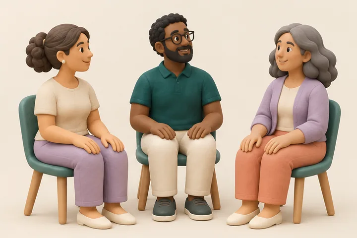

LIBRAS é uma língua
Tem estrutura gramatical própria e utiliza recursos visuais e espaciais. Não é apenas uma tradução palavra por palavra do português.
CONHECER
LIBRAS, cultura surda e preferências individuais: informações essenciais para um atendimento respeitoso.

Tem estrutura gramatical própria e utiliza recursos visuais e espaciais. Não é apenas uma tradução palavra por palavra do português.
Nem toda pessoa surda utiliza LIBRAS ou tem a mesma preferência por português escrito ou outros recursos.
Pergunte como ele prefere se comunicar e não direcione automaticamente toda a conversa ao acompanhante.
MATERIAIS LINGUÍSTICOS
O alfabeto manual pode ser utilizado para soletrar nomes e palavras. Para conhecer sinais e outros elementos da LIBRAS, consulte materiais de instituições especializadas.
Os sinais combinam configuração e movimento das mãos, expressões não manuais e outros elementos. Observar um sinal isolado não substitui uma conversa acessível.